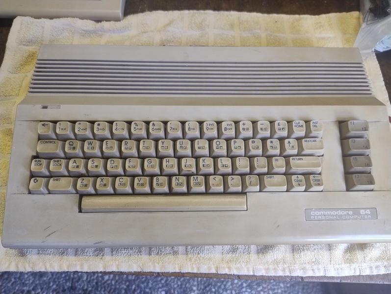
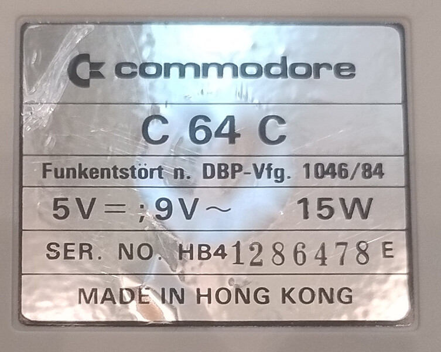

Equipment
I didn’t really get into retro computing until mid-2026. I’d always been interested in the topic. I watched YouTube videos and looked into the 6502 CPU a bit. But it took my coworker to really get me hooked on the subject.
So I checked out WillHaben and searched for “Commodore C64” and “VIC-20”. Those were the first items I planned to add to my collection. I came across two offers pretty quickly - right in my area.
First, I bought the VIC-20. It was still in its original packaging. The seller had received it as a confirmation gift. However, he didn’t really enjoy using it, so the computer ended up in the basement. Luckily for me, he didn’t just throw it away, so I was able to get the little computer through Willhaben.
The Commodore C64 had also been stored in a basement. However, the man who sold it to me told me that he and his brother had used it quite a lot to play games. He also mentioned that this device was sometimes used to measure time during various races. In recent years, though, it had also been stored in a basement. Not exactly the best storage conditions. As a result, the machine showed a fair amount of wear and tear, and inside, dust, dirt, and other debris had piled up. It’s also possible that the case briefly served as a home for a spider. At least, I found traces of one. The item for sale, however, was a larger collection. And so, in addition to the C64-C, there were also two floppy disk drives. These were in a similar condition.
VIC-20
Todo
Add VIC-20 description and photos.
C64-C 01 (lets call him ALPHA)
Todo
Finish section.


C64-C 02 (lets call him BRAVO)
Todo
Finish section.
Diskdrives
Todo
Finish section.